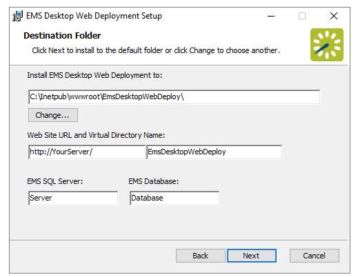

In order to upgrade
NOTE: If you are upgrading from a version of EMS released prior to server version 35, please contact Customer Support.
To learn more about our release update process, see Updating to the Latest Version of EMS and How Are EMS Applications Updated.
The server upgrade process will upgrade the EMS databases on your MS SQL Server. If you are upgrading from EMS Enterprise 4.x or below, your existing EMSEnterprise_Master database (which contains licensing information) will be replaced by a new EMS_Master database, and your existing EMS database will be upgraded to the current version.
NOTE: A Microsoft SQL Server SA level account will be required to execute the database upgrade process.
NOTE: For information on installing the optional Email Notification Service or the EMS Campus Auto Sync Service (EMS Campus only), see Installing or Upgrading the EMS Email Notification Service and/or Installing or Upgrading the EMS Campus Auto Sync Service.
Follow the procedures below to upgrade individual workstations to
NOTE: Before beginning the installation process, please install or upgrade your EMS databases. To learn more about

NOTE: The
http://[ServerName]/EMSDesktopWebDeploy/ (replace [ServerName] with the name of your web server)
NOTE: The first time you launch the
All optional EMS features, services, and add-ons are listed here. You may need to install or upgrade additional features.